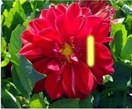
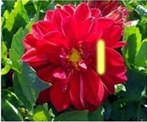
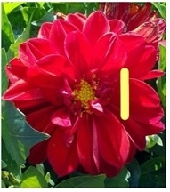

RotoPaint 属性面板包括一组控件，您在编辑绘制描边的属性时主要需要这些控件。你可以在下面找到大部分 中风 属性面板中的选项卡。
两者都在 中风 和 RotoPaint 选项卡，您可以设置 源 控制到特定颜色或要从克隆和显示画笔中提取像素的输入。选择:
• 颜色 -在你的笔画/形状中使用特定的颜色。
• 前景 -从 RotoPaint 中提取像素 Bg 输入，包括在其上绘制的任何笔画/形状。这个输入主要用于克隆。
• 背景 -从中提取像素 Bg 输入，不包括在其上绘制的任何笔画/形状。
• 背景 1 , 背景 2 或 背景 3 -从中提取像素 Bg1 , Bg2, 或 Bg3 输入。
在 中风 选项卡上，选择要用于描边的画笔类型。从 画笔类型 下拉菜单，选择:
• 油漆 -使用正常的油漆刷。
• 涂抹 -在盘子上使用涂抹刷。
• 模糊 -用画笔描边模糊你的盘子。您可以使用调整模糊效果的强度 效应 滑块。
• 锐化 -用画笔笔触磨你的盘子。您可以使用调整锐化效果的强度 效应 滑块。
在 中风 标签，你可以设置大行程的 刷子大小 滑块。你也可以通过检查笔杆的尺寸来将笔杆的尺寸与笔压力联系起来 尺寸 旁边的框 压力改变 .
|
|
 |
| 一个低 刷子大小 价值。 | 一个更高的 刷子大小 价值。 |
的 画笔间距 滑块可调整画笔 dabs 之间的距离。更高的设置增加了 dabs 之间的空间，在绘制时会产生虚线效果。较低的设置会减小距离并创建实心笔刷笔划。
|
|
|
| 一个低 画笔间距 价值。 | 一个更高的 画笔间距 价值。 |
在 中风 标签，你可以设置在行程的硬度 刷子硬度 滑块。
|
|
 |
| 一个低 刷子硬度 价值。 | 一个更高的 刷子硬度 价值。 |
你也可以通过检查笔杆的硬度来将笔杆的硬度与笔杆的压力联系起来 硬度 旁边的框 压力改变 .
当您在一系列帧上对笔画或其一部分进行动画处理时，可以使用 写在 滑块下 中风 “属性” 面板中的选项卡，以调整描边上的 dab 在这些帧上显示的顺序。有关设置参数动画的更多信息，请参见 使用合成环境 第一章。
• 开始写 -滑动以选择油漆开始的笔画长度。0 是笔画的开始，1 是结束。
• 写到底 -滑动以选择油漆结束的行程长度。
|
|